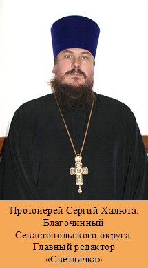

|

Сегодня, слава Богу, в Украине выходит достаточно много
православных изданий. Наряду с общеукраинскими газетами и журналами издаются
епархиальные газеты, и даже газеты отдельных приходов. Подавляющее их
большинство ориентировано на взрослую аудиторию. В то же время довольно мало
православных изданий для детей. А ведь дети более всего нуждаются в печатных
материалах, касающихся их сокровенной жизни, проблем духовного поиска. Особенно
в наше смутное время, которое непрерывно прессует неокрепшие детские умы
суррогатами западной бездуховной культуры. Ранимая же детская душа тянется к прекрасному,
к свету, к Богу. Эту потребность необходимо поддерживать и предлагать нужную
ребенку духовную пищу.
Понимая духовные проблемы, стоящие сегодня перед очень
многими мальчиками и девочками, а также их родителями, инициативная группа
севастопольского благочиния дала жизнь православной газете для детей и взрослых
«Светлячок». Газета издается по благословению Митрополита Симферопольского и
Крымского Лазаря.
Газета «Светлячок» выходит с сентября 2008 года, один
раз в месяц. Объем газеты – 12 полос формата А4, первая и последняя полосы –
цветные, внутренние страницы – черно-белые. Тираж газеты 1200-1500 экземпляров,
но в планах увеличение тиража. Выпуск издания полностью финансирует
севастопольское благочиние, помогают и спонсоры. Газета бесплатно
распространяется по севастопольским и симферопольским храмам, воскресным школам, детским домам,
интернатам, детским библиотекам. Кроме того, газету «Светлячок» получают
верующие нескольких городов Крыма и Украины.
По многочисленным отзывам можно судить о том, что
газету читают «от корки до корки» как дети, так и взрослые. Духовная
направленность материалов газеты, освещение животрепещущих проблем, наличие
заданий для совместной работы родителей и детей делает нашу газету желанной во
многих семьях. В газете публикуются сочинения детей об их пути к вере, о
любимых святых, об их увлечениях, о проблемах взаимоотношений со взрослыми и
друг с другом. Православные кроссворды и загадки, задания «закончи диалог»,
«играем в поэтов», «что пропустил автор» и многое другое делают нашу газету
интересной и познавательной.
Удивлением и радостью для нас был и большой интерес
взрослых к газете. Нам поступали звонки от взрослых, участвующих в логических
играх, ориентированных на детей. Начали приходить письма от православных семей,
предлагающие свои материалы. Конечно, мы с радостью их публикуем. Мы заметили,
что «Светлячок» читают и люди старшего поколения, бабушки и дедушки. Очевидно,
у современных читателей присутствует большой голод по чистым, светлым,
радостным, духовным материалам.
Мы открыты для сотрудничества, ведь «Светлячок» –
газета для всех. Ждем ваших отзывов и предложений. Присылайте нам свои заметки,
стихи, рассказы, статьи на актуальные темы, волнующие как детей, так и
взрослых. «Светлячок» ждет вас!
|
|